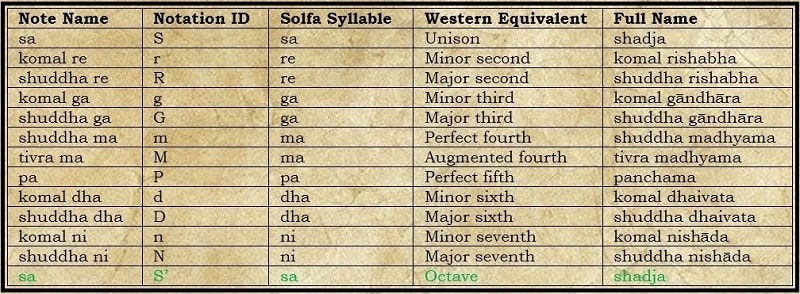

The Minute Notes
Swaras (as defined above) are used for convenience as technically in this music, there are what we call 22 shruthis (also notes). The minute note of pitch, often musicians are trained to notice and be able to play/sing it back. In other words in each octave, there are 22 notes that are playable markers.
Added definitions to a swara also mean different things, a system set up for easier and direct communication between musicians and for notation.
Shuddha Swaras = Pure Swaras
Only Chal Swaras can be Vikrit Swaras.